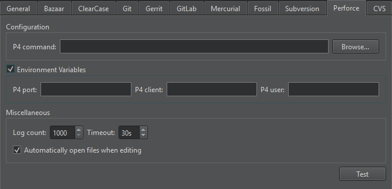

Perforce
Perforce is a fast software configuration management system developed by Perforce Software.
Note: Enable the Perforce plugin to use it.
Configuring Perforce
To set Perforce preferences, select Preferences > Version Control > Perforce:

In P4 command, set the path to the command-line client executable.
Set workspace details in P4 user, P4 client, and P4 port.
To specify the details individually for several projects, use configuration files instead. Create a p4config.txt configuration file for each project in the top level project directory, and run p4 set P4CONFIG=p4config.txt once. You must deselect the Environment Variables check box.
Editing Files
In addition to the standard version control system functions described in Use common VCS Functions, you can select Tools > Perforce > Edit File to open a file for editing within the client workspace. By default, files are automatically opened for editing. To disable this feature, select Preferences > Version Control > Perforce, and then deselect the Automatically open files when editing check box.
To list files that are open for editing, select Tools > Perforce > Opened.
To group files for commit, select Tools > Perforce > Pending Changes.
To view information about change lists and the files in them, select Tools > Perforce > Describe.
See also Enable and disable plugins, Set up version control systems, Use common VCS functions, and Version Control Systems.